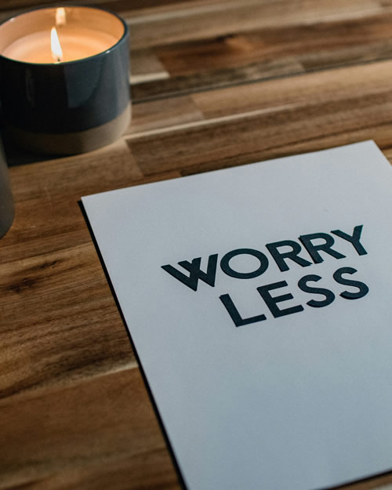

Stress Relief Tips
Everyone experiences stress differently, so there isn't one solution that works for everyone. The good news is that there are many healthy ways to reduce stress and improve your wellbeing. You may find that a combination of these tips works best for you.
Get Regular Exercise
Exercise is one of the best ways to reduce stress. Physical activity releases chemicals called endorphins, which can help improve your mood and make you feel more relaxed. You don't have to play a sport or go to the gym - going for a walk, riding a bike, or any kind of physical activity that you enjoy can all help.
Get Enough Sleep
A good night's sleep is important for both your physical and mental health. Not getting enough sleep can make you feel more stressed, tired, and irritable. Try to go to bed at the same time each night, avoid using your phone just before bed, and aim for around 8–10 hours of sleep if you're a teenager.
Talk to Someone You Trust
Sometimes simply talking about what's bothering you can help you feel better. Sharing your thoughts with a parent, family member, friend, teacher, or school counsellor can provide support and help you find solutions. You don't have to deal with stress on your own.
Take Time to Relax
Making time to relax is an important part of managing stress. Listening to music, reading a book, drawing, spending time in nature, or practising deep breathing can all help calm your mind. Even taking a short break during a busy day can make a difference.
Eat a Healthy, Balanced Diet
Eating regular, healthy meals helps give your body the energy it needs to cope with stress. Try to eat plenty of fruit, vegetables, whole grains, and protein, and drink enough water throughout the day. Eating too much junk food or skipping meals can sometimes make you feel worse.
Stay Organised
Feeling overwhelmed often comes from having too much to do at once. Using a planner, writing a to-do list, or breaking large tasks into smaller steps can make things feel more manageable. Completing one small task at a time can help reduce stress and build confidence.
Spend Time Doing Things You Enjoy
Making time for hobbies and activities you enjoy is a great way to take your mind off stressful situations. Whether it's playing an instrument, gaming, cooking, drawing, or spending time with friends, doing something you enjoy can help you relax and improve your mood.
Everyone experiences stress from time to time, and that's completely normal. The important thing is to recognise when you're feeling stressed and use healthy ways to manage it. If stress becomes overwhelming or doesn't go away, it's always a good idea to talk to a trusted adult or a healthcare professional.
Suggestions:
- Get Regular Exercise.
- Get Enough Sleep.
- Talk to Someone You Trust.
- Take Time to Relax.
- Eat a Healthy, Balanced Diet.
- Stay Organised.
- Spend Time Doing Things You Enjoy.
